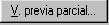
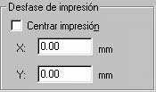
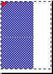
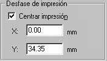
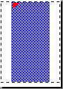

12. Impresión de un dibujo.
Esta primera toma de contacto con la impresión pretende acercarnos de forma simple al procedimiento de trazado de dibujos.
1. Abre cualquier práctica anterior.
2. Selecciona Imprimir del menú Archivo.
Es un menú bastante sencillo de entender. En la parte superior podemos guardar configuraciones de impresión y usarlas para otros dibujos. En la parte central podemos elegir distintos tipos de plumillas si vamos a utilizar un plotter. En la parte inferior podemos controlar el número de copias, imprimir en un archivo, ver la vista previa...
3. Pulsa el botón
4. Observa el tamaño del papel y la ubicación del dibujo.
5. Pulsa ESC.
6. Pulsa en la ficha superior Parámetros de trazado.
Desde aquí podemos ajustar la orientación del papel, tamaño del trazado, etc.
7. Activa la casilla Límites de la parte izquierda y pulsa en
8. Haz lo mismo con las casillas Extensión y Pantalla. Obseva la diferencia
Con la opción Límites podemos ver exactamente el dibujo con mismo tamaño de los límites de la plantilla. Por ejemplo, si el área de trazado es de 297 x 210, el tamaño del dibujo también será así.
Extensión se refiere al área de dibujo real en el que hemos dibujado los objetos. Ésta puede ser más grande o más pequeña que los límites del dibujo.
Pantalla crea una impresión utilizando cualquier cosa que haya en la pantalla en ese momento.
Con la opción podemos designar sólo una porción del dibujo que queremos imprimir. Pruébalo.
9. Pulsa en 
El rectángulo blanco representa el papel de dibujo que puede estar orientado en vertical u horizontal. Normalmente, en las impresoras están en vertical y en los trazadores en horizontal. La línea rectangular azul muestra el área imprimible. El área sombreado en azul muestra el Área efectiva, tamaño y forma del área que AutoCAD utilizará, y depende de muchas cosas como veremos más adelante.
El triangulito rojo representa el icono de rotación o punto donde se originará la impresión.
Escala de impresión
La mayoría de veces sólo utilizaremos dos opciones: Ajustar a escala y 1:1. Con la primera, es posible que no haya ninguna relación lógica entre los límites de la pantalla y las medidas del dibujo que se imprimirán. Es decir, podemos dibujar una línea de 10 unidades y en la impresión, esta línea puede medir, por ejemplo 18 cm, ya que dependerá de los límites y del tamaño del papel utilizado.
Si colocamos la escala en 1:1 obtendremos la medida exacta de la línea. Por ejemplo, imaginemos que hemos definido los límites típicos de un DIN A4. Entre punto y punto de la rejilla hemos definido una distancia de 10. Esto quiere decir que si dibujamos una línea entre punto y punto e imprimimos en escala de 1:1, obtendremos una línea de 1cm de longitud.
Una escala de 1:2 obtendría la mitad de la medida real.
|
 |
 |
|
 |
 |
Desfase de impresión
El desfase determina dónde se
colocará el punto de comienzo del área de trazado. Puedes probar a cambiar los
parámetros y obtener una vista preliminar para comprobarlo. A la derecha tienes
dos ejemplos: